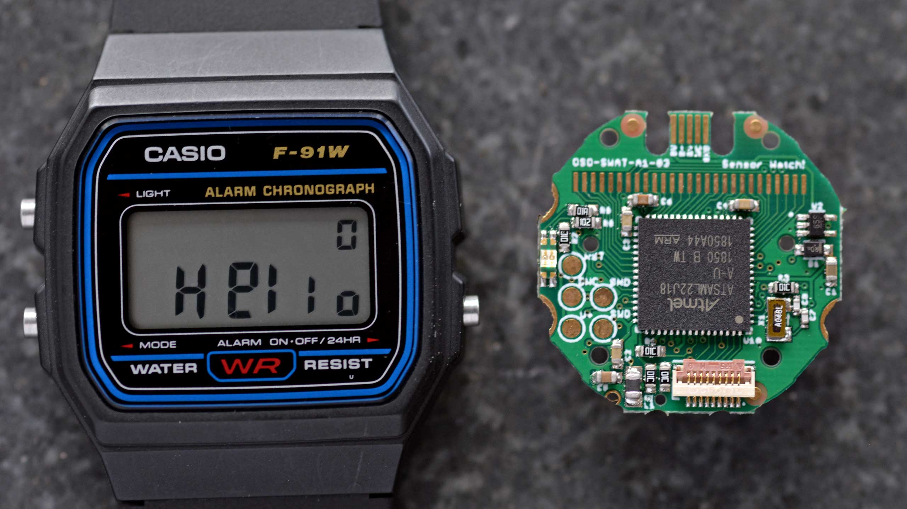
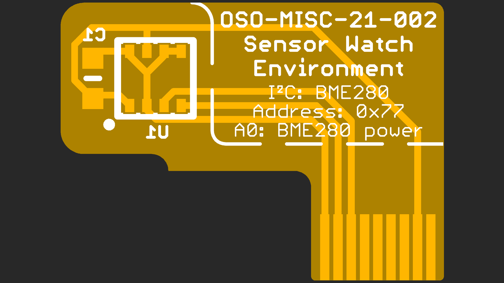

The Sensor Watch
The Sensor Watch is a board replacement for the classic Casio F-91W wristwatch. It is powered by a Microchip SAM L22 microcontroller with built-in segment LCD controller. You can write your own programs for the watch using the provided watch library, program the watch over USB using the built-in UF2 bootloader, and then install the board in your existing watch case to run your own software on your wrist.

Features:
- ARM Cortex M0+ microcontroller
- 32KHz crystal for real-time clock with alarm function
- Ten digit segment LCD, plus five indicator segments
- Three interrupt capable buttons
- Red / green PWM’able LED backlight
- Optional piezo buzzer (requires some light soldering)
- On-board USB Micro B connector
- Reset button with double-tap UF2 bootloader
- Nine-pin flex PCB connector

You may have noticed that there are no sensors on this board. That is by design: rather than pick sensors for you, the goal is to add a tiny flexible PCB with the sensors YOU want, and interface them over the nine-pin connector. The connector provides the following options for power and connectivity:
- 3V power (nominal voltage from a CR2016 coin cell, can drop to ~2.7V)
- An I²C interface with built-in pull-up resistors
- Five general purpose IO pins, which can be configured as:
- Five analog inputs
- Five interrupt-capable digital inputs, with internal pull-up or pull-down resistors
- Five digital outputs
- SPI controller (with one spare analog / GPIO pin leftover)
- One UART TX/RX pair (with three GPIO leftover)
- Up to four PWM pins on two independent TC instances
- Two external wake inputs that can wake from the ultra-low-power BACKUP mode
| Pin | Digital | Interrupt | Analog | I2C | SPI | UART | PWM | Ext. Wake |
|---|---|---|---|---|---|---|---|---|
| A0 | PB04 | EIC/EXTINT[4] | ADC/AIN[12] | — | — | — | — | — |
| SCL | — | — | — | SCL SERCOM1[1] | — | — | — | — |
| SDA | — | — | — | SDA SERCOM1[0] | — | — | — | — |
| A1 | PB01 | EIC/EXTINT[1] | ADC/AIN[9] | — | SCK SERCOM3[3] | RX SERCOM3[3] | TC3[1] | — |
| A2 | PB02 | EIC/EXTINT[2] | ADC/AIN[10] | — | MOSI SERCOM3[0] | TX or RX SERCOM3[0] | TC2[0] | RTC/IN[1] |
| A3 | PB03 | EIC/EXTINT[3] | ADC/AIN[11] | — | CS SERCOM3[1] | RX SERCOM3[1] | TC2[1] | — |
| A4 | PB00 | EIC/EXTINT[0] | ADC/AIN[8] | — | MISO SERCOM3[2] | TX or RX SERCOM3[2] | TC3[0] | RTC/IN[0] |
These tiny “sensor boards” have a set outline, and the available area for your electronics is quite small (5.7 × 5.7 × 1 mm). Still, this is plenty of room for an environmental sensor, MEMS accelerometer or magnetometer and a couple of decoupling capacitors. Note that you will likely be limited to QFN and LGA type parts; SOICs are too large, and even SSOP packages are generally too thick. You can find reference designs for several sensor boards in the PCB/Sensor Boards directory within this repository.
Getting code on the watch
The watch library in this repository is very work-in-progress, but it should allow you to get started. To create a new project, copy the “starter-project” folder in the apps folder, and write your code in the app.c file.
You will need to install the GNU Arm Embedded Toolchain to build projects for the watch. The watch library has been tested with the 9-2019-q4-major version and the 10.3-2021.07 versions.
To build your project, open your terminal and navigate to the project's make folder, then type make.
To install the project onto your Sensor Watch board, plug the watch into your USB port and double tap the tiny Reset button on the back of the board. You should see the LED light up red and begin pulsing. (If it does not, make sure you didn’t plug the board in upside down). Once you see the “WATCHBOOT” drive appear on your desktop, type make install. This will convert your compiled program to a UF2 file, and copy it over to the watch.
Watch Interface Guidelines (WIG)
This document outlines best practices for developing watch faces for Movement, the community firmware for the Sensor Watch. While this is a rather specific scope, many of these concepts will be relevant to writing a bare-metal Sensor Watch app as well. After reading this document, you should have a sense for the hardware capabilities and limitations of Sensor Watch, the kinds of applications that are well-suited to the hardware, and the interaction models that tend to make for a rich and usable watch face.